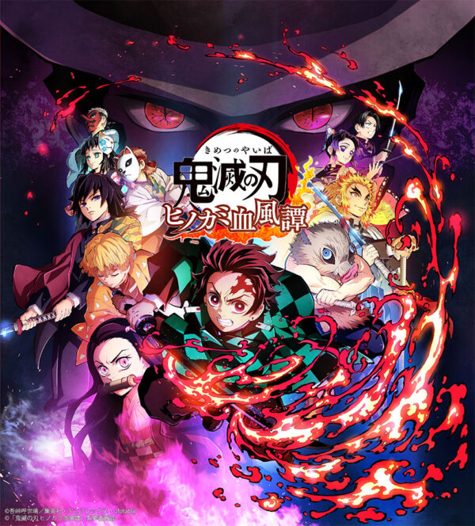
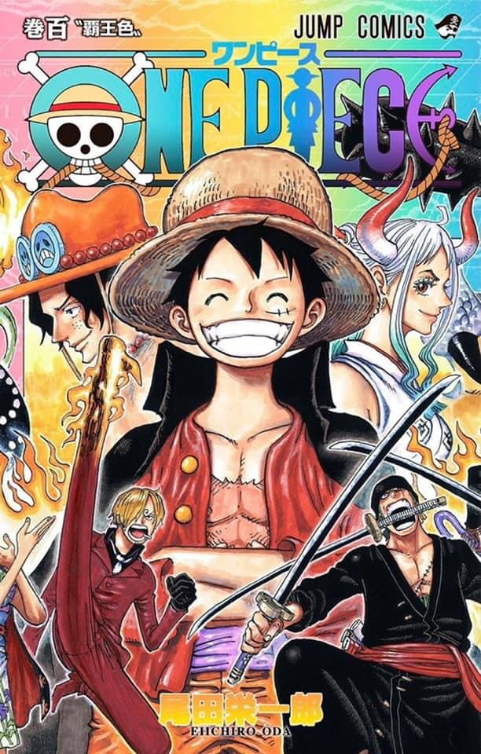

Name:
ดาบพิฆาตอสูร(Demon Slayer)
เขียนโดย:
โคโยฮารุ โกโตะเกะ
ตัวละคร:
คามาโดะ ทันจิโร่
คามาโดะ เนะซึโกะ
อากัตสึมะ เซ็นอิตสึ
ฮาชิบิระ อิโนะสุเกะ
สึยุริ คะนะโอะ
ชินะซุกะวะ เก็นยะ
เนื้อเรื่อง:
เรื่องราวเกิดขึ้นในประเทศญี่ปุ่นยุคไทโช คามาโดะ
ทันจิโร่ เป็นเด็กหนุ่มผู้มีจิตใจอ่อนโยนและเฉลียวฉลาด ในฐานะลูกชายคนโตของครอบครัวคนเผาถ่าน
เขาจึงเป็นหัวเรี่ยวหัวแรงในการหารายได้เลี้ยงดูครอบครัวจากการเผาถ่านไปขายหลังจากพ่อของเขาเสียชีวิต
ทุกสิ่งทุกอย่างได้เปลี่ยนแปลงไปเมื่อมีอสูรบุกเข้ามาสังหารคนในครอบครัวของทันจิโร่
จนหมดสิ้นเหลือแต่เพียงเขาและน้องสาวที่ชื่อเนะซึโกะเท่านั้น
เนะซึโกะที่รอดตายมาได้กลับกลายเป็นได้อาบเลือดของอสูรจนกลายเป็นอสูรไป
ทว่าก็น่าประหลาดใจที่เธอยังคงมีความรู้สึกนึกคิดและการแสดงอารมณ์อย่างมนุษย์ยิ่งคงหลงเหลืออยู่
หลังจากที่ทันจิโร่ได้ต่อสู้กับโทมิโอะกะ กิยู
นักล่าอสูรที่เดินทางผ่านมาและต้องการจะฆ่าเนะซึโกะที่กลายเป็นอสูรไปแล้ว
เขาจึงตัดสินใจที่จะเป็นนักล่าอสูรตามคำชักชวนของกิยู เพื่อหาทางทำให้น้องสาวกลับมาเป็นมนุษย์
และตัดผ่านโซ่ตรวนแห่งโศกนาฏกรรมที่น่าเศร้าจากอสูรที่ฆ่าคนในครอบครัวของเขาให้จงได้

Name:
วันพีซ(One Piece)
เขียนโดย:
เออิจิโร โอดะ
ตัวละคร:
มังกี้ D ลูฟี่
โรโรโนอา โซโล
นามิ
อุซป
วินสโมค ซันจิ
โทนี่ โทนี่ ช็อปเปอร์
นิโค โรบิน
แฟรงกี้
บรู๊ค
จินเบ
เนื้อเรื่องย่อ:
วันพีช เป็นเรื่องราวในยุคทองของโจรสลัด
โจรสลัดทุกคนมีเป้าหมายเดียวกันคือเพื่อค้นหา สมบัติที่เรียกว่า "วันพีช"
ซึ่งผู้ใดสามารถค้นหาและครอบครองวันพีชอยู่ ผู้นั้นก็คือเจ้าแห่งโจรสลัด(ราชาโจรสลัด)
โดยผู้ที่เคยครอบครองวันพีชนั้นมีอยู่คนเดียวตามที่เปิดเผยคือ เจ้าแห่งโจรสลัด โกลด์ ดี โรเจอร์
ซึ่งหลังจากที่ ได้ครอบครองวันพีซแล้ว โกลด์ ดี โรเจอร์ก็ได้มอบตัว
และยอมรับโทษการประหารชีวิตที่เกาะโร๊คบ้านเกิดของตนนั่นเอง และก่อนตายโกลด์ ดี โรเจอร์
ได้ทิ้งคำพูดก่อนตายที่เปลี่ยนยุคสมัยของโจรสลัดว่า "สมบัติของฉันหรอ อยากได้ก็เอาไปซิ ไปหาเอาเลย
ฉันเอาทุกอย่างบนโลกไปไว้ที่นั่นหมดแล้ว" แล้วเหล่า
โจรสลัดทั้งหลายจึงมุ่งหน้าสู้แกรนด์ไลน์เพื่อตามหาวันพีซ

Name:
นารูโตะ(Naruto)
เขียนโดย:
มาซาชิ คิชิโมโตะ
ตัวละคร:
อุซึมากิ นารูโตะ
อุจิฮะ ซาสึเกะ
ฮารุโนะ ซากุระ
ฮาตาเกะ คาคาชิ
ซาอิ
ยามาโตะ
จิไรยะ
เนื้อเรื่องย่อ:
ในแว่นแคว้นของโลกแห่งนินจา
หมู่บ้านโคโนฮะได้ถูกปีศาจจิ้งจอกเก้าหางโจมตีเมื่อสิบสองปีก่อน ทำให้โฮคาเงะรุ่นที่ 4
ซึ่งเป็นหัวหน้าหมู่บ้าน ต้องยอมพลีชีพเพื่อสะกดวิญญาณของปีศาจจิ้งจอกเก้าหาง
โดยผนึกไว้ในร่างของทารกคนหนึ่ง นามว่า อุซึมากิ นารูโตะ สิบสองปีถัดมา
นารูโตะถูกเกลียดชังจากชาวบ้านที่ล่วงรู้ความลับที่เป็นพลังสถิตร่างของจิ้งจอกเก้าหาง
นารูโตะมีความใฝ่ฝันจะเป็นโฮคาเงะและอยากให้ทุกคนยอมรับ
หลังจากนารูโตะสำเร็จการศึกษาเป็นนินจาชั้น เกะนิน (นินจาระดับล่าง)
นารูโตะปฏิบัติหน้าที่ภายใต้การควบคุมของ ฮาตาเกะ คาคาชิ ซึ่งเป็น โจนิน (นินจาระดับสูง) โดยมี
อุจิวะ ซาสึเกะ และ ฮารุโนะ ซากุระ เป็นสมาชิกร่วมทีมอีกสองคน อุจิวะ
ซาสึเกะนั้นมีความแค้นกับอุจิวะ อิทาจิ
ผู้เป็นพี่ชายของตนซึ่งเป็นคนสังหารผู้คนในตระกูลอุจิวะทั้งหมด
ในการสอบคัดเลือกเป็นจูนิน (นินจาระดับกลาง) พวกนารูโตะได้เข้าร่วมการทดสอบด้วย
แต่โอโรจิมารุได้บุกโจมตีหมู่บ้านโคโนะฮะระหว่างการสอบรอบสุดท้าย ส่งผลให้โฮคาเงะรุ่นที่ 3
หัวหน้าหมู่บ้านในขณะนั้น ต้องเสียชีวิตลง
นารูโตะและจิไรยะออกเดินทางเพื่อตามหาซึนาเดะให้มาเข้ารับตำแหน่งเป็นโฮคาเงะรุ่นที่ 5
หลังจากซึนาเดะมาเข้ารับตำแหน่งแล้ว
ซาสึเกะซึ่งไขว่คว้าหาพลังของโอโรจิมารุเพื่อล้างแค้นพี่ชายของตน ได้หนีออกจากหมู่บ้านไป
พวกนารูโตะพยายามจะตามตัวซาสึเกะกลับมาแต่ไม่สำเร็จ หลังจากนั้น
นารูโตะได้เดินทางออกจากหมู่บ้านเพื่อไปฝึกวิชากับจิไรยะ